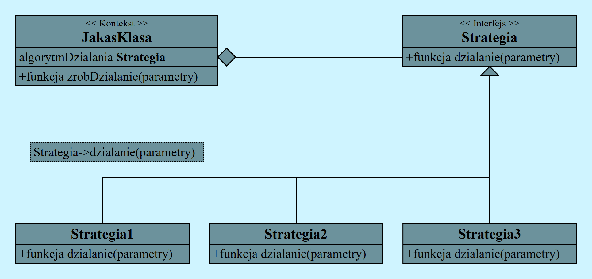

Co to jest wzorzec strategia?
Strategia jest to wzorzec projektowania, który pozwala wydzielić grupę algorytmów o podobnym działaniu lecz różnej funkcjonalności wewnętrznej, mogące się dynamicznie zmieniać między sobą, a poźniej stworzyć do tych metod osobne klasy i metody przełączania między nimi.
Schemat wzorca strategii:

Klasa, nazywana kontekstem zawiera wskażnik na jedną ze strategii, której deleguje wykonanie algorytmu.
Interfejs to abstrakcyjny typ klas, od którego są tworzone klasy pochodne, zwane strategiami.
Przykład wykorzystania wrorca strategii:
Chcemy stworzyc bossa w grze, dajmy mu ładne imię "Baron Gleb II von Allegart". Gleb będzie miał różne ataki, między którymi będzie potrafił się przełączać. Stwórzmy interfejs, czyli klasę podstawową:
class BossAttack{
public:
virtual ~BossAttack()=default; //dekonstruktor w strategii jest obowiazkowy
virtual int attack(string boss_name)=0; //funkcja bedzie wymac nadpisania
};Dodajmy kilka metod ataków, tworząc nowe klasy:
class BossAttackKnife:public BossAttack{public:
int attack(string boss_name) override{
cout<<boss_name<<" atakuje magicznym scyzorykiem."<<endl;
return 30;
}
};
class BossAttackMachete:public BossAttack{public:
int attack(string boss_name) override{
cout<<boss_name<<" tnie twoja plec zalodowala macheta."<<endl;
return 60;
}
};
class BossAttackBones:public BossAttack{public:
int attack(string boss_name) override{
cout<<boss_name<<" rzuca eksplodujace rybie osci."<<endl;
return 200;
}
};
class =BossAttackDance:public BossAttack{public:
int attack(string boss_name) override{
cout<<boss_name<<" tanczy brake-dance na nagrobku twojego dziadka."<<endl;
return 0;
}
};Stwórzmy klasę bossa wraz ze strategią ataku:
class Boss{
private:
unique_ptr<BossAttack>attack_strategy_;//to jest wskaznik na strategie
public:
string boss_name;
void setAttack(unique_ptr<BossAttack>new_attack_strategy){
attack_strategy_=std::move(new_attack_strategy);
}//metoda zmiany strategii
int attack(){
if(attack_strategy_){
return attack_strategy_->attack(boss_name);//klasa->atak
//inny sposob to (*attack_strategy_).attack(boss_name);
}else{
cout<<boss_name<<" pije mleko."<<endl;
return 0;
}
}
};Spróbujmy wywołać nasz kod:
int main(){
Boss Gleb;
Gleb.boss_name="Baron Gleb II von Allegart";//jakzez bez tak pieknego imienia?
int your_health=300;
Gleb.setAttack(make_unique<BossAttackMachete>());//ustawienie wywolywanej klasy
your_health-=Gleb.attack();
Gleb.setAttack(make_unique<BossAttackBones>());
your_health-=Gleb.attack();
Gleb.setAttack(make_unique<BossAttackDance>());
your_health-=Gleb.attack();
if (your_health<0){
cout<<"Po dlugich przemysleniach "<<Gleb.boss_name<<" zadecydowal wyslac ciebie na
sluzbe do osmanckiego sultana."<<endl;
}else{
cout<<"Twoje zdrowie wynioslo "<<your_health<< " po tym, jak wypiles te podejrzana herbata
ze stokrotka."<<endl;}
return 0;
}Powyżej został przedstawiony Code 1. Bardziej rozbudowaną wersję tego programu można znaleźć pod linkiem Code 2.
Po co wykorzystywac wzorzec strategii?
Wzorzec strategii pozwala na dynamiczną zmianę algorytmy wewnątrz objektu. Stosowanie go w kodzie pozwala izolować algorytmy i uniknąć konstrukscji wielu warunków, zmniejszając ilość pisanego kodu oraz uproszczając dodawanie nowych metod.